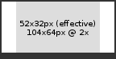

This document is intended to help developers present their HR SaaS product as an assessment app in Talent App Store.
An assessment is some interaction relating to a job application at some point during the recruitment process, for example:
To complete an assessment, any of these parties might get involved along the way:
See also:
As the vendors of the assessmenthub app, Aotal charges you, the developer, for every API call to POST /assessments/byID/{id}/appDetails, with a completed assessment.
Fees will be based on either an agreed % of your total subscription fees to customers, or an agreed % of your fees per completed assessment, and will be designed to fit in with your existing fee model. The minimum fee per completed assessment will be $US1.00. There are no charges for partial/incomplete assessments.
As for any app in Talent App Store, your app also pays for core API calls, as described at http://developer.talentappstore.com. These costs are low.
Lets look at assessments in action by installing some apps (if you're creating a new tenant, you may need to click the first install link twice). You can start in an incognito window for these steps.
Go to www.talentappstore.com, sign up and click at top right to create a tenant (use google auth to avoid a temporary issue with email-based logins).
Install the Tiny ATS app (after the 403 error, click back, sign out, then sign in again to Talent App Store, then click back into your tenant and sign in.
Install the Assessment hub app.
Open the Tiny ATS app. You're looking at the recruiter's view of a demo ATS page, displaying a list of job applications.
Create a single application. Use dummy values for all the id fields. Behind the scenes, your own email address will be used.
Now install Picket, our sample assessment app. The picket assessment measures a candidate's affinity for customer service by asking them to choose from several images representing good service.
Return to the ATS. Now, against the application, you should see the assessment strip - a row of boxes, one for each assessment type - with a single box in it, for the picket assessment.
Click on the picket assessment to start it. Note the picket image now has a dashed border, indicating the assessment is underway.
Now check that you've received an email with a link to start the assessment. Don't click on the link just yet.
Now install an identity app, so that candidates can log in (in order to complete assessments). Make sure to select "candidate" as the principal type when you install.
Install the Tiny career site app. This app provides a home page that the candidate can be redirected to after completing the assessment.
Now click on the email in your inbox, and complete the picket assessment. The picket assessment is one that requires input form the candidate, but nothing from the user.
Back at the ATS, refresh the page, and the assessment should now appear as completed (solid border). click on the assessment to see the results.
Now install the Assessment App (user) app.
Refresh the page in the ATS and note the two new assessments that are available.
Start the credit check assessment (icon of credit card). This particular assessment needs no input, and completes immediately after you start it (solid border now shown).
Click on the assessment to see the details results.
Now started the police check assessment (icon of police hat). This assessment needs input from the user, so a red icon appears once the assessment is started. Click on the icon and provide the input. Note how once the user completes the assessment-provided web page which is iframed within the popup, the popup closes automatically.
Click on the assessment again to see the detailed results.
Your assessment app. Your app does the hard word of actually conducting the assessment. For example a basic numeracy testing assessment might guide the candidate through a series of web pages, each one asking them an arithmetic question, and then at the end calculate an overall score for them.
The assessment hub app. The hub provides centralized assessment management and is separate from any single assessment app. The assessment hub app:
The applicant tracking system (ATS) app. The ATS:
Before moving on, your app should be ready to be installed. You may also have added setup and/or launch pages.
See installing and controlling setup and launch pages for more.
The hub consumes GET /assessmentTypes/forApp on your app to ask for your assessment types.
Your app should declare at least one assessment type. If you are able to create a meaningful default experience it makes it easier for customers to try before they buy.
In this example, your app is declaring that it supports a single assessment type, "MS Word proficiency".
Based on these settings, a candidate will only need to complete this assessment once, no matter how many different jobs they apply for over the next year. Also, the candidate's results are not visible to the candidate themselves.
Apps can use different strategies for their assessment types:
At some point, an assessment for one of your assessment types will actually be started, e.g. when a recruiter selects it from a drop-down menu.
That results in an assessment being created in the assessment hub (which coordinates assessments across all assessment apps).
The assessment hub then notifies your app by consuming your POST /assessments/byID/{id}/tenantDeltaPings endpoint. Your endpoint receives a message like this:
Your app now has control over the lifecycle of the assessment (other than the customer putting it on hold or cancelling it). You might do your own system's housekeeping for the new assessment, e.g. creating rows in your own tables, sending messages, etc.
Your app may also be informed via POST /assessments/byID/{id}/tenantDeltaPings that an assessment has been deleted (e.g. in response to a privacy response, or to conform to data retention laws).
In response, your app should clean up data held its own database relating to the assessment.
(future) Your app may also be informed via this API that an assessment has been updated (e.g. in response to the tenant putting it on hold), in which case your app should stop whatever it is doing with the candidate.
Once your app learns that the customer has started an assessment, typically, you'll fetch the details of the assessment by consuming GET /assessments/byID/{id}.
Some assessment apps may need more details about the candidate, such as their CV, address, name, etc., or perhaps secure information such as salary.
Your app can get these details from a view. The assessment details you fetched previously included a view key. Pass that in to your call to GET /applications/views/byKey/{key}
A view is a json formatted package containing all the data that the customer feels that your assessment app should see. If you need data added to the view, you can contact the customer.
The view includes candidate name, address, answers to screening questions, linked data (e.g. resume/CV, cover letter, attached document(s)), as well as data items pulled through from the job.
The tenant can attach a different view to each assessment type, exposing just enough information for your assessment app to do its work.
Having been alerted to a new assessment, and having fetched all details for the assessment, your product can do its thing for the assessment.
At each stage of processing, your app should push the assessment's state up into the assessment hub by consuming PATCH /assessments/byID/{id}/appDetails.
The assessment's state includes:
An assessment can be in any of these statuses. There are 2 statues that can be set by the hub, and 4 statuses that can be set by your app.
Some statues are final, i.e. once the assessment is in this state, it will never leave it again.
| Status | Set by | When |
| Started | Hub | When the assessment is first started, or when the customer restarts an assessment that was in the "Error" state (hopefully after fixing the cause of the error). |
| In progress | App | When the app learns about the recently started assessment (via incoming API call). |
| Cancelled (final) | Hub | When the customer wants to halt the assessment (e.g. candidate has been declined). |
| Complete (final) | App | When the assessment is complete, and the result is available. |
| Opted out (final) | App | When for some reason (e.g. technical difficulty, refusal) the candidate cannot/will not complete the assessment. |
| Error | App | When for some reason beyond the power of the app to fix, e.g. missing data fields in the view, the assessment cannot be progressed. |
Below are some typical scenarios:
| Scenario | Status transitions |
|
Started -> In progress -> Complete |
|
Started -> Error -> Started -> In progress -> Complete |
|
Started -> In progress -> Opted out |
|
Started -> In progress -> Cancelled |
The assessment's image appears in the assessment strip, which in turn is usually embedded in the ATS alongside the other applicant details (name, email etc.). Setting the image is a good way for you to help the user understand the results from your assessment at a glance, without needing to drill in (unless they choose to). This is useful in the tightly packed screens in a typical ATS, which show many applicants and many assessments on a single page.
You can simply serve up a static image, or generate your images dynamically, e.,g. passing in the candidate's score as a URL parameter. For an example of this, see this demo dynamic image generator for assessment apps, written in node.js.
Users will appreciate an image which is a great visual representation of your assessment:
The status image should be suitable for displaying at an effective resolution of 52x32. Ideally your image should be 2x this to cater for high density displays (Retina Macbooks etc).

You should set the candidate interaction uri when you want to link the candidate to something (e.g. to have them complete a quiz).
If your assessment type was marked as appCommunicatesDirectlyToCandidate == false, then whenever you change the candidate interaction uri (including the first time you set it), the hub will send an email to the candidate with the new link in it. If you don't want this (i.e. your app sends its own emails to the candidate), then you should set appCommunicatesDirectlyToCandidate to true. This will prevent the candidate also receiving emails from the hub.
Whether your assessment type sets appCommunicatesDirectlyToCandidate to true or false, its still a good idea to set the candidate interaction uri if you have a sensible destination for the candidate.
For this example, let's assume that your app does its thing by having the candidate complete an online assessment. Below, it updates the assessment's status to indicate it is underway, and sets the candidate interaction link.
You can optionally protect your web pages with TAS SSO, using principal type of candidate. This protects against the link falling into the hands of someone other than the candidate, and means the candidate enjoys a seamless experience as they navigate into your app.
If you do use SSO, you should probably perform a sanity check that the candidate who logs in matches the one the assessment is for.
You should set the user interaction uri when you want to display something to the user (i.e. someone looking at a list of applicants, and seeing your assessment there). That could be a web page showing:
When userInteractionUrl is set, your app's web page is rendered within an iframe in the popup over the assessment strip (i.e. within the ATS pages).
The iframe has a minimum width of 380px by default, and a maximum width of 960px. If no height is supplied the browser will default to 150px.
You can update the dimensions of the iframe displayed in the popup, to make it best fit your content, with something like this:
This technique can only be used to adjust width/height values. Any other CSS passed will be ignored (e.g. border).
These problems may cause a blank iframe inside the assessment popup.
Once the candidate has completed the online process hosted at your app, your app pushes the results, with the updated status.
In this example, the assessment is now complete. It could also have been that the app was just posting interim results.
Finally, after your app has done its thing and completed the assessment, it should redirect the candidate's browser to the candidate "home page", served by some other app. Their home page might direct them to the next assessment they need to complete, or otherwise keep them updated.
From time to time, your app may introduce new assessment types (perhaps the tenant asks you for a new custom assessment type, and you have just delivered it).
When you do, you need to "ping" any other apps that care, to tell them about the change, i.e.:
When this happens, you need to consume POST /assessmentTypes/forApp/deltaPings on every app that produces it (which will include at least the assessment hub app).
In the future the tazzy proxy will make this easier for you.
(Not currently implemented)
At any time prior to an assessment being completed, the tenant can place it on hold. Upon this, your assessment app should pause any work underway if it can, and wait until the tenant either removes the on hold marking or cancels the assessment altogether.
Your app learns about assessments being placed on hold by producing /assessments/byID/{}/tenantDeltaPings (same as for learning about new assessments).
There is no tenant vetting process in Talent App Store, and anyone can set up a tenant, and install publicly listed apps (or any app they have a link for), without any type of approval. Your new tenant could be a genuine potential customer, a wandering visitor, or a competitor looking at your product.
Your app should plan for malicious tenants (e.g. spammers, malware distributors, dodgy hosting sites). We recommend that you set up a limited demo or read-only account for every new tenant. This way you can let potential customers try out your product, but without incurring any significant risks or costs.
Security: If your app has any capacity to send messages (e.g. outgoing emails or SMS messages), it is important that you do not enable this for demo accounts (except to the tenant contact email), or your app may become a target for spammers and other bad actors. Likewise, if your app allows tenants to host content (web pages, images, videos etc.) then you should limit or disable this functionality for demo accounts to avoid your app being used to host objectionable, illegal, bandwidth-intensive or copyrighted material.